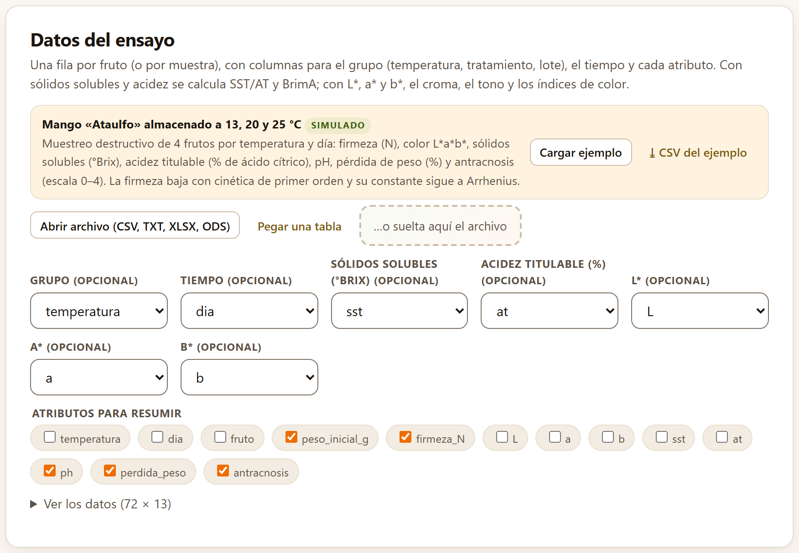
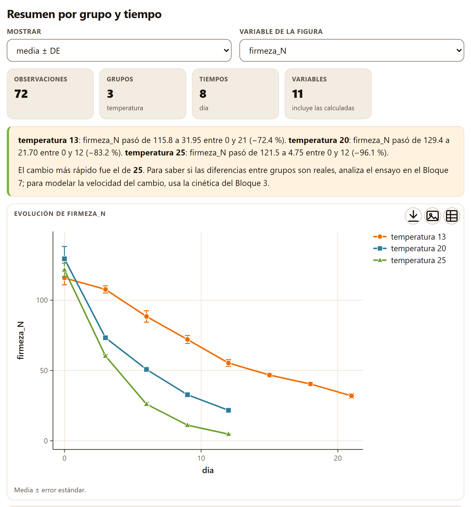
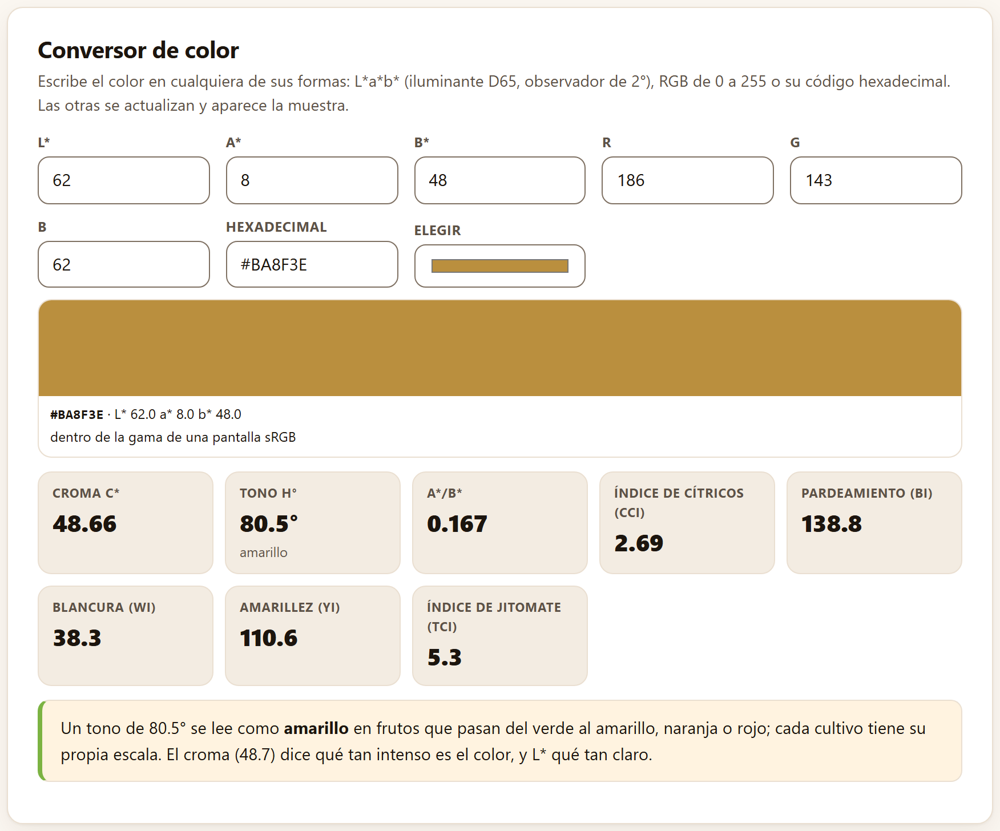
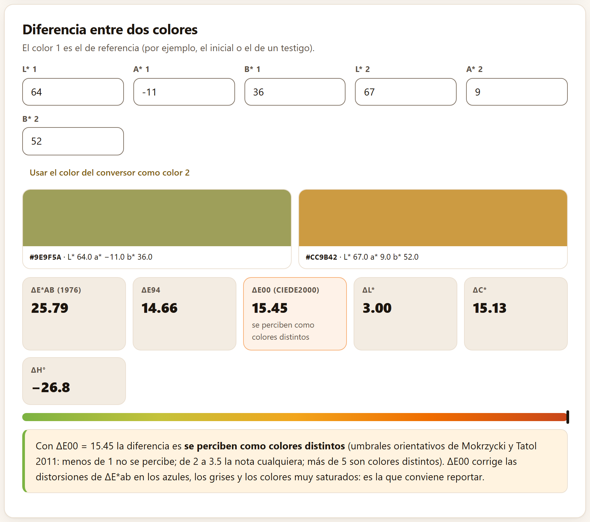
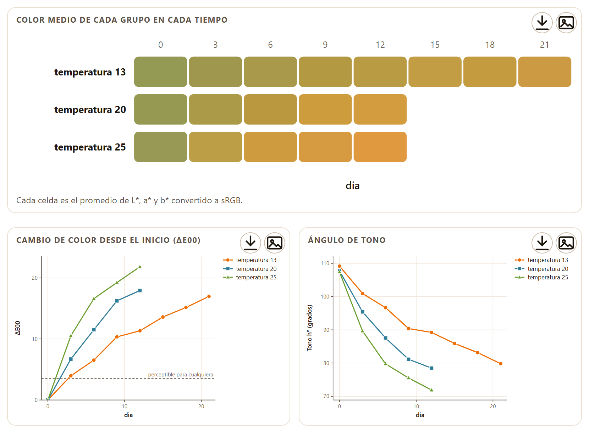
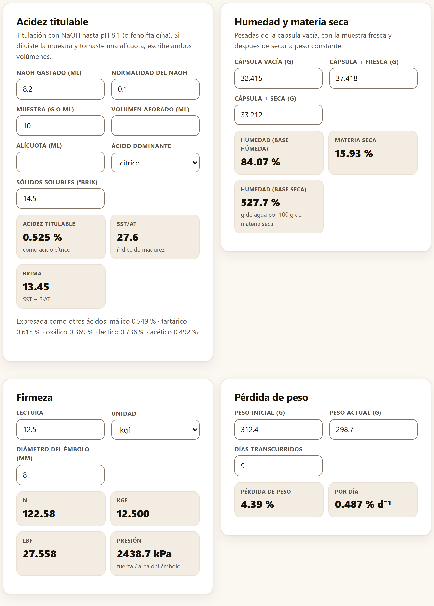
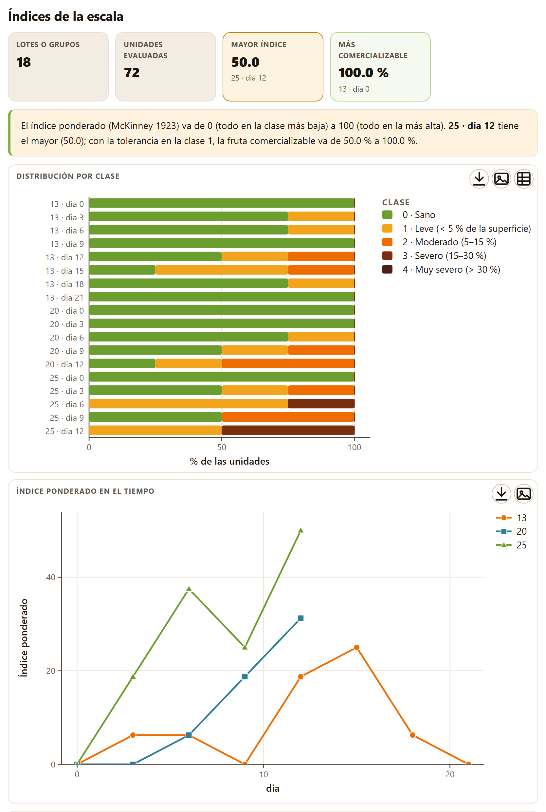
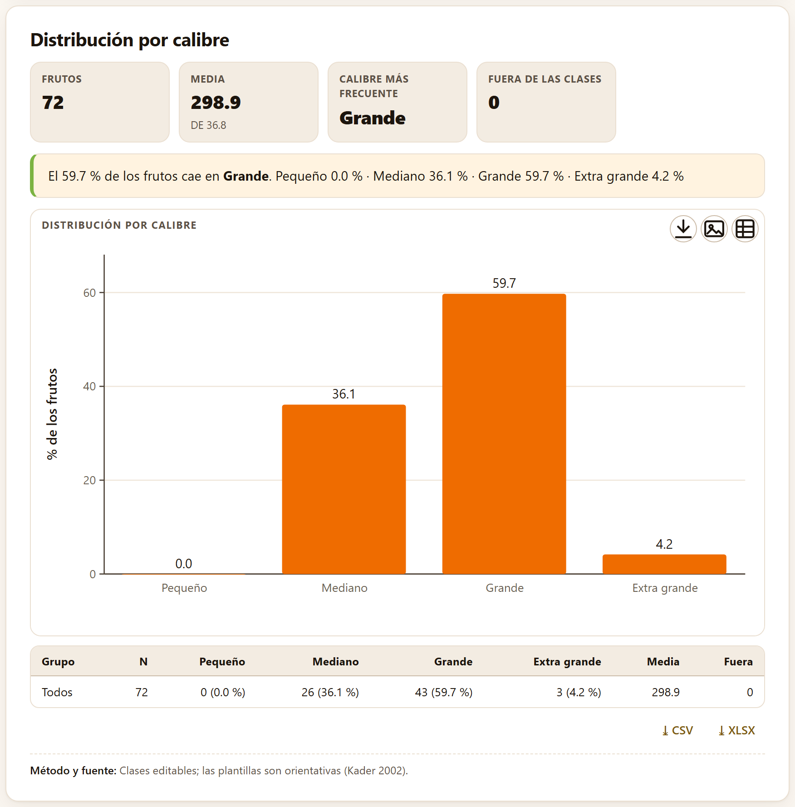

Medir es el primer paso de cualquier trabajo de poscosecha: cuánto se ablandó el fruto, cuánto azúcar y cuánta acidez tiene, de qué color está, qué tanto daño muestra y de qué tamaño es. El Bloque 2 resume esas mediciones por lote y por tiempo, convierte y compara colores en CIELAB, resuelve las cuentas de laboratorio de todos los días y lleva las escalas de daño y los calibres a índices y porcentajes. Sus resultados se leen solos o pasan al Bloque 3, que modela su velocidad, y al 7, que decide si las diferencias son reales.
El título del bloque lo resume en una línea: Índices de calidad, color CIELAB, calculadoras de laboratorio, escalas y calibres. Sus cinco pestañas son Resumen de calidad, Color, Acidez, humedad y firmeza, Escalas de madurez y daño y Calibres. Tres de ellas leen una tabla y las otras dos se llenan escribiendo; todas se recalculan en cuanto cambias un valor. El hilo de este capítulo es el mango de ejemplo: 72 frutos simulados, cuatro por temperatura y día, guardados a 13, 20 y 25 °C.
Todas las herramientas de la app que analizan una tabla —del resumen de calidad a los ensayos del Bloque 7— reciben los datos en un mismo recuadro. Se explica aquí una vez; los demás capítulos sólo dicen qué papeles pide cada herramienta.

1 2 3 4 5 6 7 8 9Al cargar una tabla, el análisis corre solo, y vuelve a correr cada vez que cambias una columna. Si falta un papel obligatorio, la app no calcula y lo dice debajo de los botones: Falta elegir la columna de: …, con el nombre del papel. Otros avisos del mismo lugar son La tabla no tiene filas con datos. y No se pudo analizar: …, seguido de la causa.
Una fila por unidad observada —un fruto, un frasco, un consumidor con un producto— y una columna por variable. El mango de ejemplo tiene una fila por fruto con su temperatura, su dia y sus atributos; no una columna por día. Las celdas vacías, NA o — se toman como faltantes.
Debajo de los datos, cada herramienta muestra sus resultados con las mismas piezas, que en el resto del manual sólo se nombran:
| Pieza | Qué es y qué se hace con ella |
|---|---|
| Mosaicos | Las cifras que importan, en recuadros con su rótulo y una línea de detalle. Un mosaico con borde de color llama la atención: ámbar para un aviso o el peor caso, verde para el mejor |
| Lectura | Un recuadro crema con borde verde que dice en palabras qué significan los números para el producto |
| Figuras | Cada una en su recuadro con título. En su esquina, Descargar SVG (flecha), Descargar PNG a 300 ppp (imagen) y, si la figura lo trae, Datos de la figura (CSV) (cuadrícula). Al pasar el puntero aparecen además ✎, el editor de la figura, y el botón del estudio de figuras (capítulo 9, sección 9.5) |
| Tablas | Con los botones ⤓ CSV y ⤓ XLSX debajo, para llevarlas a una hoja de cálculo |
| Método y fuente: | La última línea: el método que se aplicó y las obras que lo definen, con autor y año (el apéndice F trae la referencia completa) |
Cada análisis que corres deja además su sección en el informe del Bloque 9 (capítulo 9), con sus figuras, su tabla y su lectura.
La primera pestaña resume cualquier conjunto de atributos de calidad por grupo y por tiempo: la media con su dispersión, la evolución de una variable y el cambio entre el primer y el último muestreo. Es la tabla que va en cualquier informe de ensayo, antes de modelar o de comparar.
La tarjeta Datos del ensayo pide una fila por fruto o por muestra. Todos sus papeles son opcionales: Grupo (temperatura, tratamiento, lote), Tiempo, Sólidos solubles (°Brix), Acidez titulable (%), L*, a*, b* y Atributos para resumir. Con los sólidos solubles y la acidez, la app calcula para cada fruto SST/AT y BrimA; con L*, a* y b*, el croma, el tono, el índice de color de cítricos y el de pardeamiento (sección 2.3). Esas variables calculadas se suman a los atributos que marques.
Con el mango, la app propone temperatura como grupo, dia como tiempo, sst, at, L, a y b en sus papeles y, como atributos, las columnas numéricas que quedan libres salvo las que identifican la unidad (fruto): peso_inicial_g, firmeza_N, ph, perdida_peso y antracnosis.

Arriba de los resultados hay dos controles. Mostrar elige qué acompaña a la media en la tabla: media ± DE (por omisión), media ± EE o media e IC 95 %, que escribe el intervalo entre corchetes. Variable de la figura elige cuál de las variables se dibuja; abre con firmeza_N si existe.
temperatura); Tiempos 8 (dia: los valores distintos de toda la tabla); Variables 11, con la nota incluye las calculadas: las cinco marcadas más SST/AT, BrimA, croma, tono y los dos índices de color.La línea Método y fuente: dice Acidez titulable por titulación (AOAC 942.15) · BrimA: Jordan et al. 2001 · Color: CIE 2018; McGuire 1992.
Mientras madura, el fruto acumula azúcares y consume ácidos: los sólidos solubles (SST, en °Brix) suben y la acidez titulable (AT, en % del ácido dominante) baja. Su cociente resume el sabor, pero exagera cuando la acidez es muy baja. BrimA lo corrige restando la acidez con más peso, porque la lengua la percibe con más fuerza que el azúcar (Jordan et al. 2001):
En el mango de ejemplo a 13 °C, SST/AT pasa de 7.39 a 54.12 en 21 días: el fruto se volvió mucho más dulce para el paladar.
La pestaña Color tiene tres tarjetas. La primera, Conversor de color, traduce un color entre sus tres escrituras y calcula los índices que usa la literatura de poscosecha.
Su indicación dice: Escribe el color en cualquiera de sus formas: L*a*b* (iluminante D65, observador de 2°), RGB de 0 a 255 o su código hexadecimal. Las otras se actualizan y aparece la muestra. Los campos son L*, a*, b*, R, G, B, Hexadecimal y Elegir, que abre el selector de color del sistema. Abre con L* 62, a* 8 y b* 48, un amarillo de mango maduro.

#BA8F3E (R 186, G 143, B 62), dentro de la gama de una pantalla sRGB.Debajo de los campos, la muestra del color con su código y sus coordenadas, y una nota: dentro de la gama de una pantalla sRGB o, si el color no se puede mostrar, fuera de la gama sRGB: se muestra el más cercano con el mismo L* y h°. Los ocho mosaicos con los valores de partida son:
| Mosaico | Valor | Fórmula y fuente |
|---|---|---|
| Croma C* | 48.66 | C* = √(a*² + b*²): la intensidad del color (McGuire 1992) |
| Tono h° | 80.5° | h° = atan2(b*, a*), de 0 a 360°; con su lectura, amarillo |
| a*/b* | 0.167 | De negativo (verde) a positivo (rojo); muy usado en jitomate y mango |
| Índice de cítricos (CCI) | 2.69 | CCI = 1000·a* ∕ (L*·b*): negativo verde, cerca de 0 en el viraje, positivo naranja (Jiménez-Cuesta et al. 1981) |
| Pardeamiento (BI) | 138.8 | BI = 100(x − 0.31) ∕ 0.17, con x = (a* + 1.75L*) ∕ (5.645L* + a* − 3.012b*) (Palou et al. 1999) |
| Blancura (WI) | 38.3 | WI = 100 − √((100 − L*)² + a*² + b*²), la forma usada en productos cortados |
| Amarillez (YI) | 110.6 | YI = 142.86·b* ∕ L* |
| Índice de jitomate (TCI) | 5.3 | TCI = 2000·a* ∕ (L*·C*) |
La lectura traduce el tono a palabras: Un tono de 80.5° se lee como amarillo en frutos que pasan del verde al amarillo, naranja o rojo; cada cultivo tiene su propia escala. Las palabras salen de cortes fijos del ángulo: verde desde 105°, verde-amarillo de 85 a 105°, amarillo de 70 a 85°, naranja de 50 a 70°, rojo-naranja de 25 a 50° y rojo por debajo. Son una orientación general, no la escala de tu cultivo.
Un mismo cambio de a* significa cosas distintas según el signo de b*, y promediar ángulos o cocientes de colores de cuadrantes distintos engaña. El croma y el tono separan lo que el ojo distingue —qué tan intenso y de qué color— y se pueden comparar entre frutos (McGuire 1992). El conversor trabaja con iluminante D65 y observador de 2°; si tu colorímetro usa otro iluminante, sus L*a*b* no son directamente comparables.
La segunda tarjeta mide cuánto se distinguen dos colores. Su indicación dice El color 1 es el de referencia (por ejemplo, el inicial o el de un testigo). Los campos son L* 1, a* 1, b* 1, L* 2, a* 2 y b* 2; abren con un verde de mango recién cosechado (64, −11, 36) y un amarillo maduro (67, 9, 52). El botón Usar el color del conversor como color 2 copia el color de la tarjeta anterior.

Los mosaicos dan las tres fórmulas de la diferencia y sus componentes: ΔE*ab (1976) 25.79, ΔE94 14.66 y ΔE00 (CIEDE2000) 15.45, este último con su lectura (se perciben como colores distintos) y resaltado cuando llega a 3.5; y ΔL* 3.00, ΔC* 15.13 y Δh° −26.8°, la diferencia del ángulo de tono (el color 2 es 26.8° menos verde). La lectura repite el valor de ΔE00, da los umbrales orientativos y recomienda reportar ΔE00.
| ΔE00 | Lo que dice la app |
|---|---|
| menos de 1 | imperceptible |
| de 1 a 2 | perceptible sólo para un observador entrenado |
| de 2 a 3.5 | perceptible para cualquier observador |
| de 3.5 a 5 | diferencia clara |
| 5 o más | se perciben como colores distintos |
Umbrales orientativos de Mokrzycki y Tatol (2011). ΔE00 corrige las distorsiones de ΔE*ab en los azules, los grises y los colores muy saturados: en el ejemplo, ΔE*ab exagera la diferencia en más de 10 unidades.
La tercera tarjeta lee una tabla con L*, a* y b* por fruto: Columnas L*, a* y b*, con grupo y tiempo: el color medio de cada grupo en cada tiempo, su diferencia ΔE00 con el color inicial del grupo y la evolución del tono. Pide L*, a* y b* (obligatorios) y Grupo y Tiempo (opcionales). Su Cargar ejemplo carga el mango.

La app promedia L*, a* y b* de los frutos de cada grupo y tiempo, convierte esa media a un color de pantalla y calcula su croma, su tono y su ΔE00 respecto al primer tiempo del mismo grupo. Las tres figuras son Color medio de cada grupo en cada tiempo (Cada celda es el promedio de L*, a* y b* convertido a sRGB.), Cambio de color desde el inicio (ΔE00) y Ángulo de tono; debajo va la tabla con L*, a*, b*, C*, h°, ΔE00 y una Muestra del color con su código.
A 13 °C el tono medio del mango baja de 109.2° el día 0 a 79.8° el día 21 —de verde a amarillo— y su ΔE00 llega a 16.96. A 25 °C el cambio es más rápido y mayor: el tono llega a 71.9° y ΔE00 a 21.81 el día 12. A las tres temperaturas la diferencia con el color inicial ya es perceptible para cualquiera (ΔE00 > 3.5) desde el día 3: 3.96 a 13 °C, 6.70 a 20 °C y 10.52 a 25 °C.
La línea de método cita CIE 2018 (CIELAB, D65) · ΔE00: Sharma et al. 2005 · C*, h°: McGuire 1992.
La pestaña Acidez, humedad y firmeza reúne cuatro calculadoras de laboratorio que no leen tablas: se escriben las lecturas y el resultado aparece en el acto. Abren con valores de ejemplo escritos.

Para una titulación con NaOH hasta pH 8.1 o hasta el vire de la fenolftaleína. Los campos son NaOH gastado (mL) 8.2, Normalidad del NaOH 0.1, Muestra (g o mL) 10, Volumen aforado (mL) y Alícuota (mL) —vacíos: sólo si diluiste la muestra y tomaste una parte—, Ácido dominante (cítrico, málico, tartárico, oxálico, láctico o acético) y Sólidos solubles (°Brix) 14.5.
El miliequivalente es el del ácido elegido: 0.064 para el cítrico (cítricos, mango, papaya, tomate, fresa, piña), 0.067 para el málico (manzana, pera, durazno, ciruela, plátano), 0.075 para el tartárico (uva, tamarindo), 0.045 para el oxálico, 0.090 para el láctico y 0.060 para el acético. Con los valores de partida, la acidez es 0.525 % como ácido cítrico, SST/AT 27.6 (índice de madurez) y BrimA 13.45. Debajo, la misma acidez Expresada como otros ácidos: málico 0.549 %, tartárico 0.615 %, oxálico 0.369 %, láctico 0.738 % y acético 0.492 %.
Con las tres pesadas de la cápsula (Pesadas de la cápsula vacía, con la muestra fresca y después de secar a peso constante.): Cápsula vacía (g) 32.415, Cápsula + fresca (g) 37.418 y Cápsula + seca (g) 33.212. Resultan Humedad (base húmeda) 84.07 %, Materia seca 15.93 % y Humedad (base seca) 527.7 %, es decir, gramos de agua por cada 100 g de materia seca.
Convierte una lectura de penetrómetro: Lectura 12.5, Unidad (N, kgf, lbf o gf; abre en kgf) y Diámetro del émbolo (mm) 8. Da la fuerza en N (122.58), kgf (12.500) y lbf (27.558), y la Presión sobre el área del émbolo, 2438.7 kPa. La presión permite comparar lecturas tomadas con émbolos distintos; la fuerza, no.
Peso inicial (g) 312.4, Peso actual (g) 298.7 y Días transcurridos 9 dan una Pérdida de peso de 4.39 %, calculada sobre el peso inicial, y 0.487 % por día. Cuando la pérdida llega a 5 %, el mosaico se pinta de ámbar y avisa que está cerca del límite en que muchos frutos se arrugan.
Son cuentas sueltas de laboratorio: sus resultados no pasan al Bloque 9. Si quieres la pérdida de peso o la acidez de un ensayo completo en el informe, ponlas como columnas de tu tabla y analízalas en el Resumen de calidad o en el Bloque 7.
Muchos atributos se califican a ojo con una escala de clases: el grado de madurez por el color de la cáscara, la severidad de una mancha, el avance de una pudrición. La pestaña Escalas de madurez y daño convierte esas calificaciones en un índice ponderado, la incidencia y el porcentaje de fruta comercializable de cada lote.
La tarjeta La escala trae una tabla editable con el Valor y la Descripción de cada clase (Cada clase con su valor (0 = sano o el primer grado) y su descripción. Edítala o elige una plantilla.). Abre con la plantilla Daño 0–4 —Sano, Leve (< 5 % de la superficie), Moderado (5–15 %), Severo (15–30 %) y Muy severo (> 30 %)—; las otras dos son Madurez 1–5 (de Verde maduro a Sobremaduro) y Pudrición 0–3 (de Sin pudrición a Fruto podrido). + Agregar fila y × añaden o quitan clases. Debajo, Tolerancia comercial (clase máxima aceptada) elige la clase más alta que todavía se vende; abre en la segunda clase, aquí la 1.
La tarjeta Los datos acepta dos entradas. La primera es una tabla con Clase de cada fruto (obligatoria) y Grupo y Tiempo (opcionales); cada combinación de grupo y tiempo es un lote. La segunda, en el desplegable …o escribe conteos por lote, son los conteos escritos a mano, un lote por línea —por ejemplo Lote A: 50, 20, 15, 10, 5—, que se leen con Usar los conteos. Si alguna calificación no corresponde a ninguna clase de la escala, un aviso dice cuántas quedaron fuera de la cuenta.

Con el mango, la app toma antracnosis como clase, temperatura como grupo y dia como tiempo: 18 lotes de cuatro frutos. Los mosaicos dicen Lotes o grupos 18, Unidades evaluadas 72, Mayor índice 50.0 (25 · dia 12, en ámbar) y Más comercializable 100.0 % (el primero que lo alcanza, 13 · dia 0, en verde). La lectura agrega que, con la tolerancia en la clase 1, la fruta comercializable va de 50.0 % a 100.0 %. Las figuras son Distribución por clase, una barra apilada por lote, y, cuando hay grupo y tiempo, Índice ponderado en el tiempo, una línea por grupo. La tabla da para cada lote su N, el porcentaje de cada clase, el Índice, el Grado medio, la Incidencia y el porcentaje Comercializable.
El índice ponderado pesa cada fruto por su clase y lo expresa como porcentaje del daño máximo posible (McKinney 1923):
El grado medio es Σ(clase · n) ∕ N; la incidencia, el porcentaje de unidades por encima de la clase más baja; y la fruta comercializable, el porcentaje en la clase de tolerancia o por debajo. En el lote de 25 °C del día 12, dos frutos en la clase 1 y dos en la 3 dan 100 · (2·1 + 2·3) ∕ (4 · 4) = 50.0, una incidencia de 100 % y 50 % comercializable.
La lectura dice que el índice va de 0 (todo en la clase más baja) a 100. Eso es cierto para las escalas que empiezan en 0, como las de daño y pudrición. Con Madurez 1–5, la fórmula divide entre la clase máxima, así que un lote entero en la clase 1 da 20, no 0. Compara índices sólo entre lotes calificados con la misma escala.
La línea de método es Índice ponderado: McKinney 1923. Al cambiar la tolerancia, el análisis se rehace con los mismos datos. En cambio, elegir otra plantilla o editar la escala sólo actualiza la lista de la tolerancia: los resultados de abajo siguen siendo los de la escala anterior hasta que cambies la tolerancia o vuelvas a cargar los datos (o a pulsar Usar los conteos). Hazlo siempre después de tocar la escala.
Si aplicas Madurez 1–5 a la antracnosis del mango, calificada de 0 a 4, el aviso dice 46 calificaciones no corresponden a ninguna clase de la escala y no se cuentan., sólo se evalúan 26 unidades y los lotes que se quedan sin ninguna salen con el índice y el porcentaje comercializable en blanco (—), también en la lectura. Elige o escribe la escala con la que calificaste.
La última pestaña clasifica los frutos por tamaño: cuántos caen en cada calibre, cuál es el más frecuente y cuántos quedan fuera de las clases.
La tarjeta Las clases trae una tabla editable con Calibre, Mínimo y Máximo: Cada calibre con su mínimo (incluido) y su máximo (excluido, salvo en la última clase), en la unidad de tus datos. Las plantillas son orientativas: usa las de tu norma. Hay tres plantillas:
| Plantilla | Clases |
|---|---|
| Por peso (g) | Pequeño 0–200, Mediano 200–280, Grande 280–360 y Extra grande 360–600 g (la de partida) |
| Frutos por caja de 4 kg | Calibre 8 a Calibre 20: el calibre k corresponde a frutos de unos 4000 ∕ k g, y los límites son los puntos medios entre calibres vecinos (Calibre 14: 268–310 g) |
| Por diámetro (mm) | < 57 mm, 57–67 mm, 67–77 mm, 77–87 mm y > 87 mm |
La tarjeta Los frutos pide Peso o diámetro de cada fruto y, opcional, un Grupo (lote, variedad, origen). Con el mango, la app toma peso_inicial_g.

Los mosaicos dicen Frutos 72, Media 298.9 g (DE 36.8), Calibre más frecuente Grande y Fuera de las clases 0. La lectura reparte los frutos: Grande 59.7 %, Mediano 36.1 %, Extra grande 4.2 % y Pequeño 0.0 %. Con la plantilla Frutos por caja de 4 kg, el calibre más frecuente es el 14 (44.4 %), seguido del 12 (36.1 %). Si eliges un grupo, la figura muestra una serie de barras por grupo y la tabla una fila por grupo. La línea de método recuerda que las clases son editables y las plantillas orientativas (Kader 2002).
Si clasificas pesos con la plantilla Por diámetro (mm), los 72 mangos quedan fuera de las clases: el mosaico Fuera de las clases dice 72 y pide revisa los límites. En ese caso la lectura y el mosaico del calibre más frecuente nombran la primera clase con 0.0 %; no les hagas caso hasta corregir las clases.
| Si tienes atributos medidos en varios lotes y tiempos | entonces Resumen de calidad; después, el Bloque 3 para su velocidad y el 7 para comparar. |
| Si tienes lecturas L*a*b* por fruto | entonces El color de tus datos, y reporta C*, h° y ΔE00, no a* y b* sueltos. |
| Si ΔE00 entre dos tratamientos es menor que 2 | entonces el consumidor difícilmente nota la diferencia de color, aunque sea estadísticamente significativa. |
| Si calificaste a ojo con clases | entonces Escalas de madurez y daño, con la tolerancia de tu mercado. |
| Si la pérdida de peso pasa de 5 % | entonces revisa la humedad del almacén y el empaque (Bloque 8). |
Los umbrales son orientativos; la norma de tu producto y tu mercado manda.
El resumen tiene una fila por fruto y no por tiempo. La columna del tiempo está en — ninguna — o el grupo apunta a la columna del fruto; revisa los papeles. Aparecen columnas de identificación entre las variables. Desmarca su casilla en Atributos para resumir. Los colores salen raros. Revisa que L*, a* y b* no estén cruzados (L* va de 0 a 100) y que tu colorímetro use D65 y 2°. La acidez sale diez veces mayor. Diluiste la muestra y no escribiste el aforo y la alícuota, o al revés. Un lote de la escala sale con el índice en blanco. Sus calificaciones no coinciden con los valores de las clases (por ejemplo, 1.5 en una escala entera); el aviso de Los datos dice cuántas se descartaron. Todos los frutos quedan fuera de los calibres. Las clases están en otra unidad o se traslapan; corrige los mínimos y máximos.